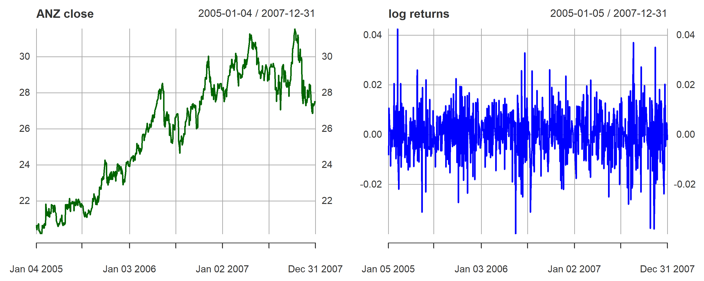

anz1.df <- readxl::read_excel("anz1.xlsx")
library(xts)
anz1.xts <- as.xts(anz1.df)Week 4 Tutorial Questions
Introduction
Recall the following definitions of 1-period returns from the Week 2 lecture.
Definition 1
Let \(P_{t}\) be the price of an asset at time \(t\). The over the period \(t-1\) to \(t\) is \[R_{t}=\frac{P_{t}-P_{t-1}}{P_{t-1}}.\]
Definition 2
The simple is defined as \[ 1+R_{t}=\frac{P_{t}}{P_{t-1}}.\]
Definition 3
Continuously compounded return, or , is denoted by \(r_{t}\) and defined as \[r_{t}=\log (1+R_{t})=\log \left( \frac{P_{t}}{P_{t-1}}\right) =\log(P_{t})-\log (P_{t-1}).\]
Implicitly, returns measure the appreciation of an asset over a holding period (1-period in this case). As such, we want returns to be positive and large. Returns are a meaningful measure of investor profit.
Question 1
Let \(r_{t}\) be log-returns of an asset. Suppose that \(r_{1},r_{2},\ldots ,r_{t}\) are independent and identically distributed (i.i.d.) as normal random variables with mean \(\mu\) and variance \(\sigma^{2}\). Using your knowledge of the normal distribution, answer the following questions.
- What is the distribution of the 2-period return \(r_{t}(2)=r_{t}+r_{t-1}\)? Show your working.
- Let \(\mu =0.1\) and \(\sigma ^{2}=0.6\). Use R to find \(\text{Pr}[r_{t}(2)<2]\).
- What is the covariance between \(r_{3}(2)\) and \(r_{7}(2)\)?
- What is the conditional distribution of \(r_{t}(2)\) given \(r_{t-1}\)?
Question 2
Use the code below to import the data file into RStudio (make sure that you have saved the data into the same directory as your .qmd file in your R Project) and convert it to xts format. This file contains data on the price, volume, low price, high price, and closing price of the ANZ stock price from 2005 to 2007, at a daily frequency.
Now use the code below to calculate log returns (close-to-close) and then plot the ANZ share price and the log returns over the sample period.
# Figure settings in r code header above:
# (fig.width=10, fig.height=4, dpi=150, fig.show='hold') stop the plot headings
# from overlapping. You may not need it all the time - only when printing
# multiple graphs
# log return for Close
logret <- diff(log(anz1.xts$CLOSE))
logret <- na.omit(logret) # removes the first NA created by diff()
# Plot 2 graphs in one row
# use mar = and mgp to adjust headings
par(mfrow = c(1, 2), mar = c(6, 4, 4, 2) + 0.1, mgp = c(2.2, 0.7, 0))
# xaxt = "n" also helps with headings
plot(anz1.xts$CLOSE, main = "ANZ close", col = "darkgreen", xaxt = "n")
plot(logret, main = "log returns", col = "blue")
# Reset layout
par(mfrow = c(1, 1))
.
1. Find the estimates of the first four sample moments of the returns. Do the returns exhibit evidence of stylised facts? Discuss.
Statistic Log_Returns
1 Mean 0.0004
2 Median 0.0005
3 Maximum 0.0426
4 Minimum -0.0399
5 Std_Dev 0.0102
6 Skewness -0.1532
7 Excess Kurtosis 1.2928
8 Obs 756.0000Answer here
- Plot the histogram of returns on ANZ over this period. Add labels, colors and an appropriate number of breaks (or bins).
hist(logret, main = "??", breaks = ??, xlab = "??",
col = "??", border = "black")- Comment on any deviations from normality suggested by these sample moments of returns.
Answer here
- Conduct a formal hypothesis test, at the 5% significance level, that the mean of returns is zero, against the alternative that it is not zero.
# we can use coredata so that we don't have to create a dataframe
# coredata() is from the zoo (and used by xts) package. It extracts the
# underlying data from a time‑indexed object, strippin off the index
# (dates/times) and attributes, and returning a plain vector/matrix
# suitable for functions that expect standard R types.
fit <- lm(coredata(logret) ~ 1)
summary(fit)
Call:
lm(formula = coredata(logret) ~ 1)
Residuals:
Min 1Q Median 3Q Max
-0.040309 -0.006152 0.000085 0.006238 0.042203
Coefficients:
Estimate Std. Error t value Pr(>|t|)
(Intercept) 0.0003764 0.0003719 1.012 0.312
Residual standard error: 0.01023 on 755 degrees of freedomAnswer here
. Using the Jarque-Bera test statistic, conduct a formal hypothesis test that returns are normal.
# Jarque Bera for log return
library(tseries)
jb_open <- jarque.bera.test(logret)
jb_df <- data.frame(
Value = c(
as.numeric(jb_open$statistic), # JB Stat
jb_open$p.value # p-value
),
row.names = c("JB Stat", "p-value"),
check.names = FALSE
)
# Optional formatting
jb_df$Value <- signif(jb_df$Value, 4)
jb_df Value
JB Stat 5.560e+01
p-value 8.431e-13